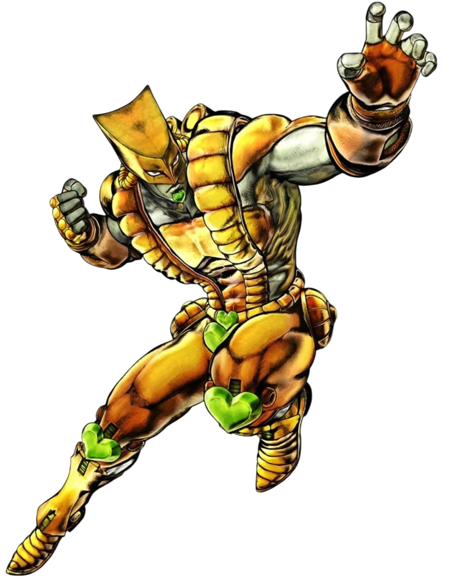
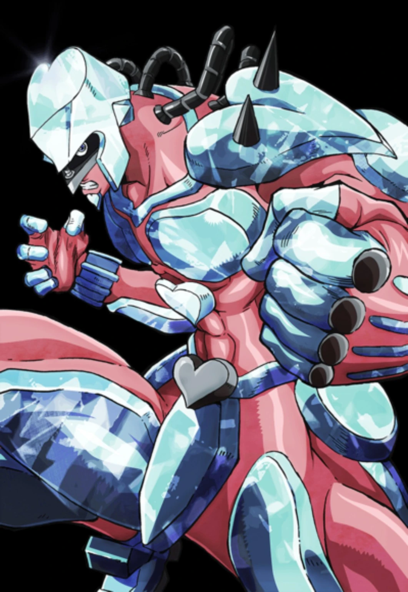
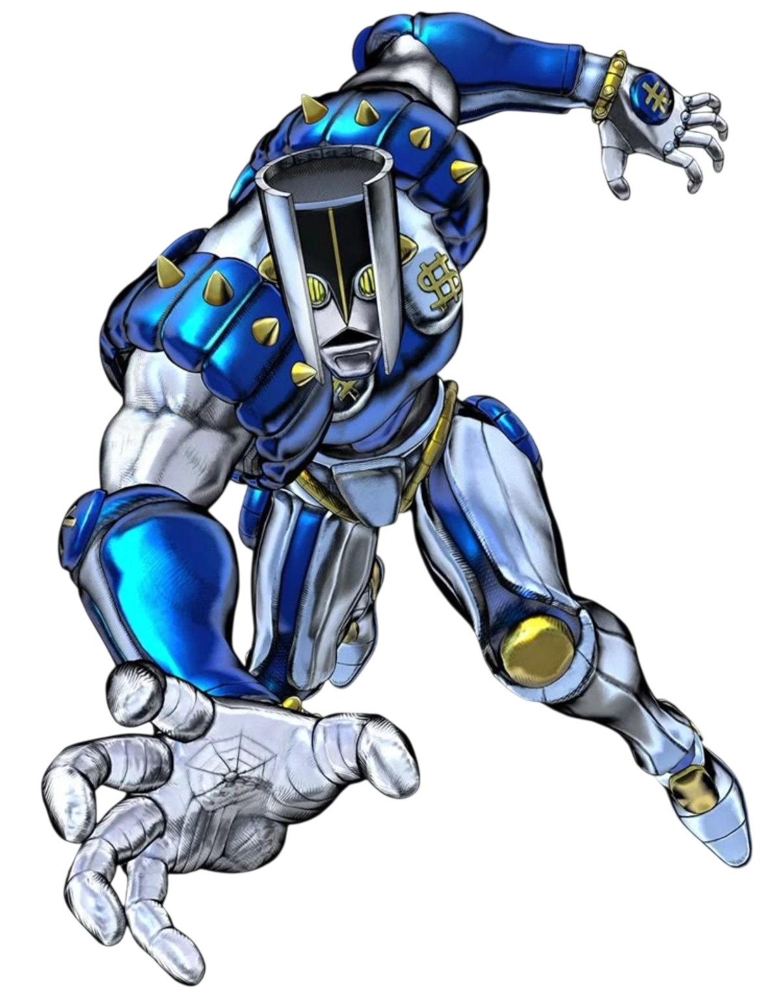
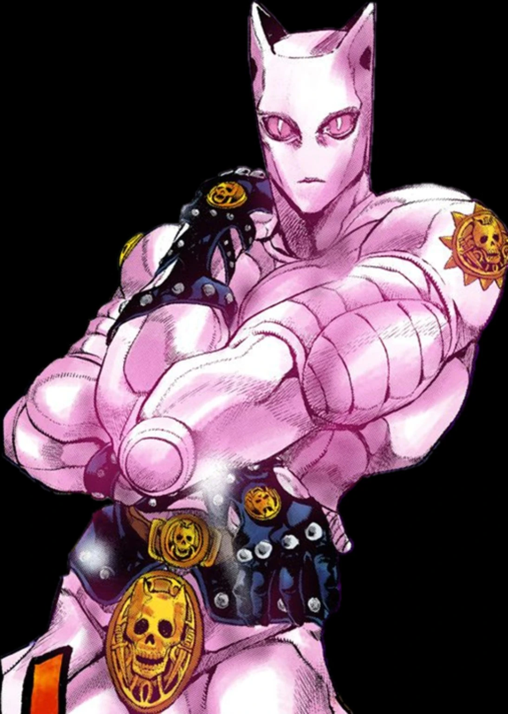
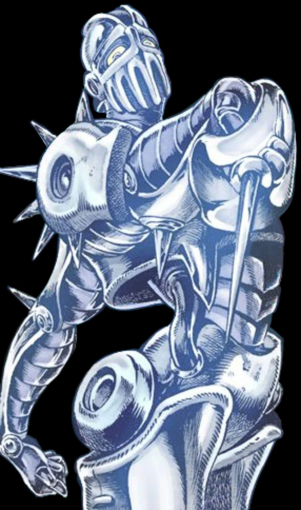
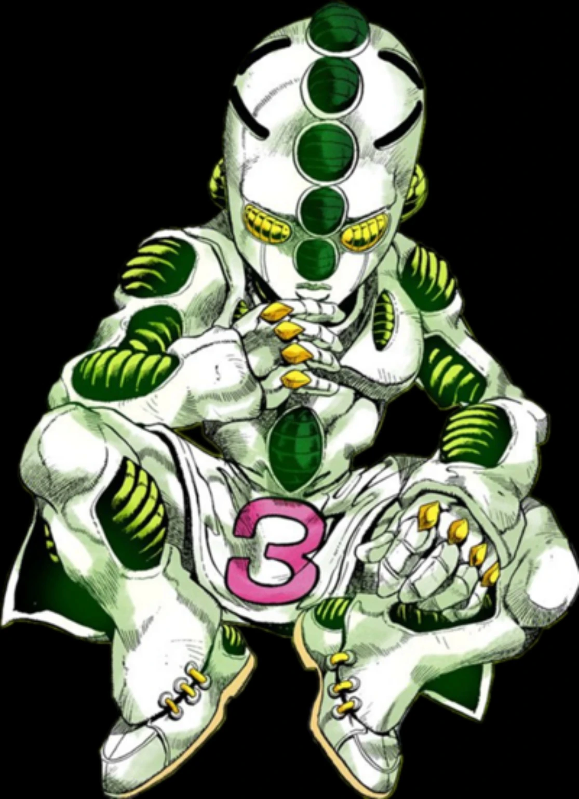
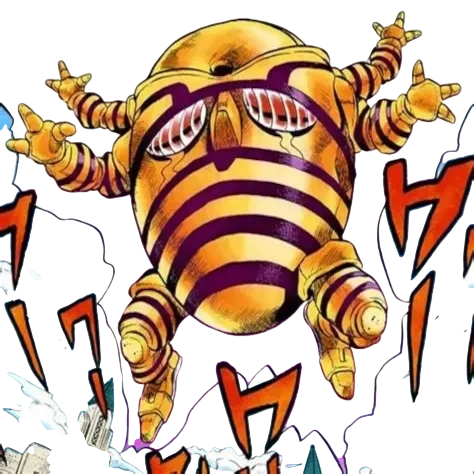
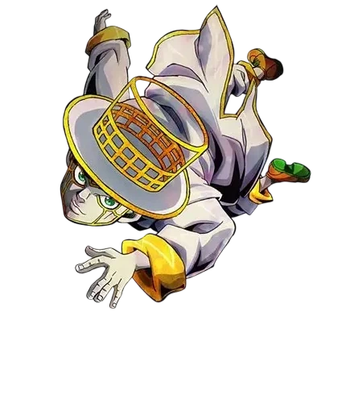

ประชิด / Crit Combo / คุมเวลา
STAR PLATINUM
หมัดประชิด คอมโบ 5 ขั้น เก็บ Crit แล้วปิดงานด้วย Star Finger หรือ Time Stop
อ่านแบบละเอียด →
คู่มือ Project JoJo แบบเอาไปเล่นจริงได้เลย ตั้งแต่หาศร เรียก Stand เก็บเลเวล ไปจนถึงคอมโบและวิธีเล่นของแต่ละตัว
กดเข้าไปจะเห็นค่าสกิลปัจจุบัน + ระบบเฉพาะของ Stand + กลยุทธ์และคอมโบที่เอาไปใช้จริงได้
หมัดประชิด คอมโบ 5 ขั้น เก็บ Crit แล้วปิดงานด้วย Star Finger หรือ Time Stop
อ่านแบบละเอียด →
หมัดหนัก มีดระยะไกล และ Time Stop 9 วิ สำหรับคนชอบจบไฟต์แบบเด็ดขาด
อ่านแบบละเอียด →อ่านจังหวะด้วย Epitaph แล้วเปลี่ยนตำแหน่งด้วย Time Dash / Time Erase
อ่านแบบละเอียด →
สลับโหมดโจมตีกับ Restore เก็บ Gauge จากการสู้ แล้วเอาไปช่วยทีม
อ่านแบบละเอียด →
Dash, Pull และ ERASE ใช้ Space Gauge เดียวกัน เล่นเก่งแล้วคุมระยะได้โหดมาก
อ่านแบบละเอียด →
ติด First Bomb คุมพื้นที่ และปล่อย Sheer Heart Attack ไปสร้างเรื่องอีกทาง
อ่านแบบละเอียด →
ยิ่งขยับยิ่งมี Gauge เล่นแบบเข้า-ออกเร็ว ไม่เหมาะกับยืนแลกนิ่ง ๆ
อ่านแบบละเอียด →
ยิงไฟ คุมทางเดิน กวาดฝูง และมี Fire Control ไว้ดับไฟเวลาทุกอย่างเริ่มพัง
อ่านแบบละเอียด →
หยุดตัวที่อันตรายที่สุดด้วย THREE FREEZE แล้วเปิดจังหวะให้ทีมรุม
อ่านแบบละเอียด →
อ่านการตัดสินใจของคู่ต่อสู้ สะสม Mind Gauge แล้วลากเป้าเข้าสู่เกมเดิมพันของ ATUM
อ่านแบบละเอียด →

Cursor อยู่ใกล้ตัวไม่ตัดระยะท่ายาวแล้ว ระบบใช้ระยะสูงสุดจริงของสกิลและเลือก “ร่างแรกที่สัมผัสแนว” ก่อน กำแพง ประตู หน้าต่าง และรถยังขวางตามจริง
Barrage ฝั่งโจมตีสามารถชนกันได้เมื่ออยู่ใกล้ประมาณ 5.25 ช่อง และหัน/เล็งเข้าหากันจริง ช่วง Clash hit จะถูกใช้ต้านกันก่อนแทนที่จะลงดาเมจปกติ
กัน TW Knife, SC Rapier Shot และ CD Glass/Homing ได้โดยตรง ปืนเกมหลักมี native per-hit hook แล้ว แต่ยังต้องเทสสด B42 ให้ครบ SP / Host / Dedicated ก่อนนับว่าชัวร์ทุกเคส
SP หยุด 5 วิ • TW หยุด 9 วิ ดาเมจที่ตีใส่เป้าหมายตอนเวลาหยุดจะถูกพักไว้แล้วค่อยปล่อยตอนเวลาเดินต่อ ผู้ใช้ SP/TW สามารถชาร์จ Time Stop ของตัวเองตอนโดนหยุดเพื่อเปิดช่วงขยับของตัวเองได้
ถ้า Time Stop เริ่มหรือทำงานอยู่ KC เปิด Time Erase ใหม่ไม่ได้ แต่ถ้า Erase มาก่อน Time Stop จะเอาระยะเวลาของตัวเองไปหักกับเวลาที่ Erase เหลือ ถ้ายาวกว่าถึงจะเหลือเวลาหยุดต่อ
ปรับเสียง, อัตราดรอปศร, ดาเมจ Stand, เปิด/ปิด Stand Level, Test Arrow และ Infinite Stand Arrow ได้ เซิร์ฟเวอร์ไหนอยากชิลหรืออยากทรมานตัวเองก็จัดได้
Baseball PvP: ถ้าฝั่ง Pitcher ไม่เลือก HIGH / MIDDLE / LOW จนหมดเวลา เซิร์ฟเวอร์จะสุ่มลูกให้อัตโนมัติแล้วเล่นต่อแทนการให้ ATUM ชนะทันที • ลูกที่สุ่มถูกล็อกเป็นคำตอบจริงก่อนเข้า GAMBLE READ จึงรองรับ YES/NO Prediction ตามปกติ • ตรวจ flow Multiplayer ของ RPS / Baseball / Racing
Racing Launch Mash เริ่มกด 1 รัวสะสมได้ตั้งแต่หน้าจอ Racing เปิด ไม่ต้องรอ READY • พลิก orientation ของ Barrage clone ทั้ง 12 แขนรอบแกนท่อนแขนให้ท่ากำมือเป็นธรรมชาติและนิ้วโป้งอยู่ด้านบน โดยไม่เปลี่ยน timing / fan / UV / animation
คัตซีน YES / NO เป็น mouse-through และกดมินิเกมด้านหลังได้ • Racing เมื่อรถ HP หมด/ออกนอกถนน รถแพ้จะเฟดออกก่อนและรถที่รอดต้องวิ่งเข้าเส้นชัยจริง • READY Launch Mash เพิ่มความเร็วตามจำนวน tap แบบ diminishing returns และมีเพดาน • ปรับ Phase/Protection ระหว่างมินิเกมให้ซ่อนผู้เล่นจาก client อื่นโดยไม่ใช้ Clone/Decoy • Double KO / ออกนอกถนนพร้อมกัน = Draw
เพิ่ม Winner’s High ให้ผู้เล่นที่ชนะมินิเกม: Stress −4% • Unhappiness −5 • Boredom −6 • Panic −5 • ใช้ได้ทั้งชนะซอมบี้และผู้เล่น โดยไม่แตะ Hunger / Thirst / Fatigue / Sickness / บาดแผล
เพิ่ม Cross Combo ของ Skill 3/4 • S4 ค้าง FULL เปิด AUTO GAMBLE PASSIVE และล็อก S4 แตะจนกว่าจะปิด • S4 Passive + S3 แตะ เมื่อ DODGE READ สำเร็จจะเชิญผู้โจมตีเข้า Gamble อัตโนมัติ • S3 ค้าง FULL + S4 แตะ ใช้ YES/NO Prediction
แยก Skill 3 เป็น Tap = DODGE READ และ Hold FULL = GAMBLE READ • เปิดได้ทีละโหมด • ยกเลิก Read ที่ยังไม่ถูกใช้ก่อนหมดเวลาจะคืน Mind Point +1 • Read ที่ Trigger/ถูก Gamble ใช้/หมดเวลาจะไม่คืนแต้ม
ฐาน ATUM Addon: Punch / Barrage / Mind Reading / Gamble • Mind Gauge 0–100 • มินิเกม Rock Paper Scissors, Baseball และ Racing • รองรับ SP / Host / Multiplayer ผ่านระบบกลางของ Project JoJo
Directional First-Contact ใช้ระยะจริง • Barrage contact grace 240 ms / catch-up สูงสุด 3 hit • TH Pull 21.875 ช่อง • Echoes Barrage 0.026 → 0.060 • Barrage Guard สำหรับ SP/TW/CD/SC/KC
เปลี่ยนการเล็งเป็นทิศเมาส์ + first physical contact และ Barrage หันตามเมาส์แบบสด
Core-load hotfix สำหรับ SP / Host / MP และกัน event ซ้ำ
แก้ MP pending attacks, Time Stop, PvP target filter, downed/crawling hit capsule, TH Pull pose และ KC clone
Time Dash SP/TW/KC ×2.5 • MR Fireball ฟรีและได้ +4 Gauge เมื่อโดนจริง • CD Restore gain จากการโจมตีลด 40%